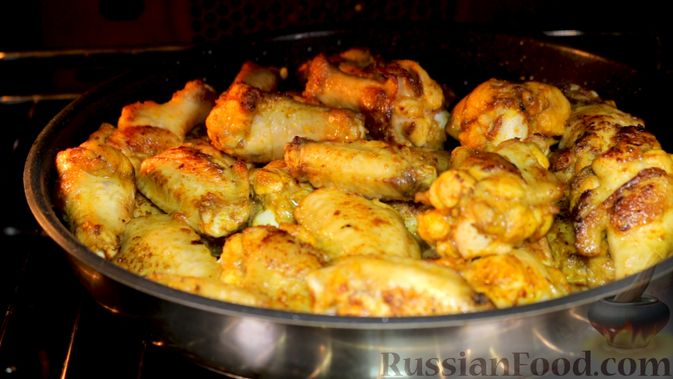
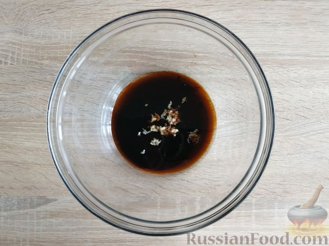
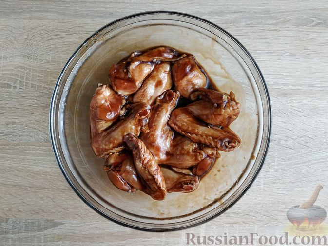
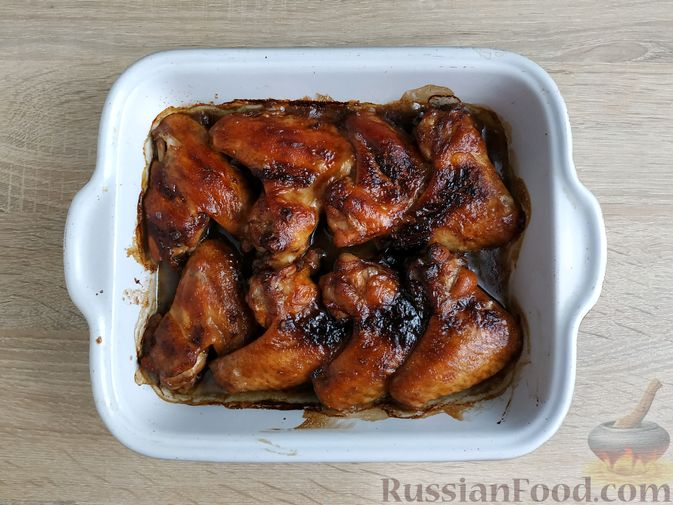
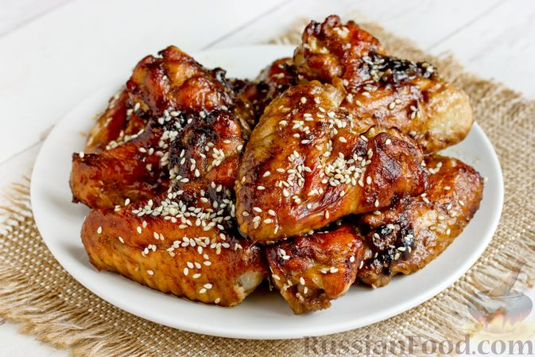

Блюдо

Ингридиенты
Крылышки куриные - 800 г (8 шт.)
Соевый соус - 2 ст. ложки
Соус терияки - 3 ст. ложки
Масло подсолнечное - 1 ст. ложка
Чеснок - 1 зубчик (крупный)
Кунжут - 1 ч. ложка
Способ приготовления
Чеснок очистите и пропустите через пресс. К чесноку добавьте соевый соус, соус терияки и подсолнечное рафинированное масло.

Ложкой как следует перемешайте компоненты соуса до однородности.

Отправьте крылышки в духовку и запекайте 45 минут при 190 градусах.

Подавайте крылышки к столу в горячем, тёплом или полностью остывшем виде.
